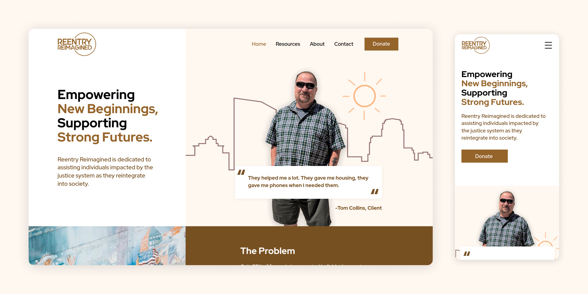
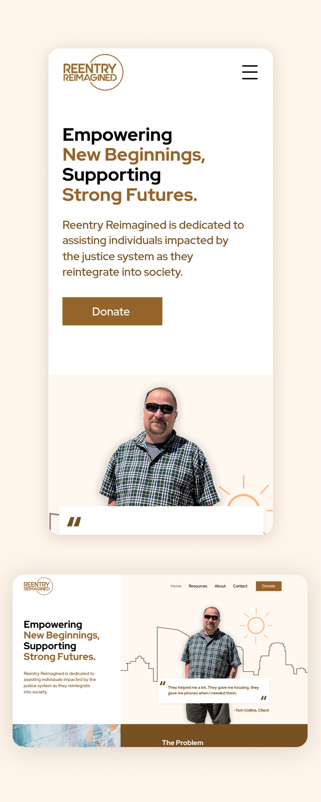

Technology
Wix, Figma, Inkscape, Krita
Service
Web Design, Branding, Digital Photography, Digital Illustration, SEO
Reentry Reimagined is nonprofit organization dedicated to supporting individuals transitioning back into society after incarceration. The redesign focused on enhancing branding, aesthetics, and SEO while maintaining brand consistency.
Result: The redesign led to a 40% increase in website traffic.